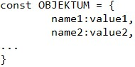
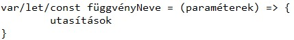
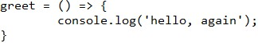
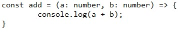
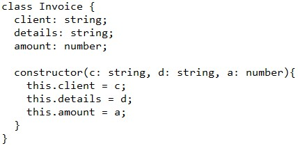
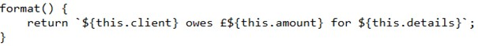
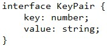
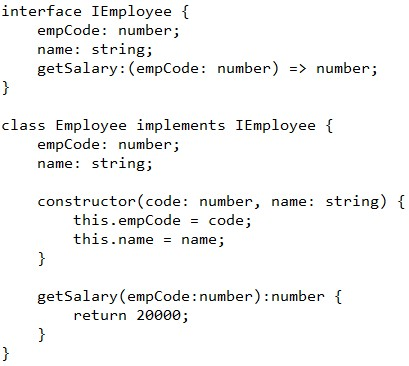
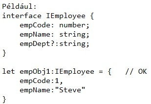

A TypeScript fájlt nem ismeri fel a böngésző, csak a JavaScript fájlt. Ahhoz, hogy .ts-ből csináljuk böngészővel kompatibilis .js fájlt, az alábbi kódot kell megadni a terminálon:
tsc {ts fájl} {js fájl}
Ha létezik a .ts és a .js fájl, és a nevük megegyezik, akkor a {js fájl} elhagyható.
Vagy ha nem létezik .js fájl, akkor a compiler automatikusan létrehozza azt a .js fájlt.
Ha a .ts és a .js fájl egyszerre van nyitva, akkor a változónevekre errort kapunk. A .js fájl bezárásával megszüntethetjük a hibát! Nem kell aggódni a hiba miatt, mivel a böngésző csak a .js fájlt ismeri fel.
Ha sokszor módosítunk és nem szeretnénk ismét futtatni a compilert, akkor meg kell adni a végén egy -w-t, amivel automatikusan watch modeba kerül a compiler és minden egyes módosítást frissít!
Nagyon fontos az, hogyha egy változónak például számot adunk, akkor utána annak a változónak nem tudunk stringet vagy boolt adni, csak számot!
Ugyanez igaz, ha egy változónak string vagy boolean típust adunk meg.
Több különböző típusú adatot is meg tudunk adni, amikor tömböt definiálunk.
A tömbhöz a tombnev.push() segítségével tudunk új adatot hozzáadni, viszont csak olyan típusú adatot adhatunk meg, ami eleve szerepel a tömbben (tehát ha csak számokat tartalmaz a tömb, akkor stringet nem tudunk hozzáadni).
Objektumok létrehozása hasonlóan történik, mint JS-ben, tehát
A különböző tulajdonságok értékeit a 3. leckében látottakhoz hasonlóan tudjuk változtatni, vagyis egy adott típusú értéket csak azonos típusúra tudunk cserélni!
Az explicit típust olyan esetben használjuk, ha nem tudunk kezdetben egy értéket adni a változónak, viszont szeretnénk előre meghatározni a típusát. Például, ha van egy "character" nevű változónk, amiről csak azt tudjuk, hogy string, akkor TypeScriptben így tudjuk megadni:
let character: string;
A másik két típus esetén pedig az alábbiakat kell megadni:
let age: number;
let isLoggedIn: boolean;
Ha nem tudjuk pontosan, hogy mi a típusa, akkor így adjuk meg:
let uid: string|number;
Ha tömböt szeretnénk expliciten megadni, akkor (ha például csak stringeket tartalmazó tömböt szeretnénk), az alábbit kell megadni:
let ninjas: string[] = [];
Megj.: Ha nem adjuk meg az = []-t, akkor nem tudjuk alkalmazni a tömbön a push metódust!
Ha kevert tömböt szeretnénk, akkor pedig így definiáljuk az üres tömbünket:
let mixed: (string|number|boolean)[] = [];
Objektumot meg az alábbiak szerint adjunk meg:
let ninjaOne: object;
Ilyenkor nem adunk meg kezdőértékeket, csak a változók típusait!
Megjegyzés: Nagyon fontos! Amennyiben típust adunk meg és nem értéket, akkor kettőpontot kell tenni a { elé, ha viszont értéket adunk meg, akkor egyenlőségjelet!
Ha nem tudjuk, hogy milyen legyen a változó típusa, vagy a későbbiekben ezen szeretnénk változtatni, akkor a típust anyvel kell megadni.
let age: any;
Kezdőértékkel pedig
let age: any = 25;
Ha azt szeretnénk megadni, hogy egy tömbbe bármilyen típusú érték kerülhet, akkor (a fentihez képest egyszerűbben) adjuk meg ezt:
let mixed: any[] = [];
Egy projekten belül előfordulhat az, hogy több TS fájllal is dolgozunk. Ilyenkor, ha ezeket átfordítjuk JS-re, például a böngészőnek, rengeteg TS és JS fájl keletkezik egy helyen, ami káoszhoz vezet. Éppen ezért célszerű elszeparálni a fájlokat. Rendszerint Public mappába kerülnek azok a fájlok, amik már a végleges projekt részei (pl. HTML, CSS, JS fájlok), míg a src-ba azok, amikkel dolgozunk (pl TS fájlok).
A fájlok rendezéséhez JSON fájlt kell létrehozni, amit a terminálon megadott tsc --init paranccsal tudunk létrehozni.
A JSON fájlban meg kell keresni a "rootDir"-t, és meg kell adni az alábbit: "rootDir": "./src". Ezzel módosítottuk a gyökérkönyvtárat arra az elérési útvonalra, ahol a projektben dolgozunk.
Utána meg kell keresni az "outDir"-t, és meg kell adni az alábbit: "outDir": "./public". Ezzel megadtuk, hogy a kész fájlok, mint például a JS fájl, a public mappába kerül, miután a compiler átalakította a TS-t JS-sé.
Ha új TS fájlt hozunk létre VSC-ben, az automatikusan a src mappán kívül lesz, viszont automatikusan lefordul és az új JS fájl létrejön a public mappán belül. Ha ezt ki szeretnénk küszöbölni, akkor a JSON fájl legvégére, a } jel után meg kell adni azt, hogy include: ["src"]. Ebben az esetben csak a src mappában található TS fájlok fognak automatikusan lefordulni.
A nyílfüggvény általános alakja:
TS-ben meg tudjuk azt csinálni, hogy eleve megadjuk, hogy mi az, amit függvénynek szeretnénk definiálni, például így:
let greet: Function; (nagy F-fel)
Ilyenkor a greet csak függvény lehet, például:
Hasonlóan a korábban látottakhoz, a paraméterek típusait is meg tudjuk adni a függvény létrehozásakor, így például elkerülhetjük azt, hogy amikor két szám összeadását szeretnénk elvégezni, akkor paraméternek például szöveget adunk meg.
add(5,9);
Megadhatunk opcionális paramétereket is, ezeket úgy kell jelölni, hogy a paraméter neve után ?-et teszünk. Például: c?: number, ekkor a c paraméter egy opcionális paraméter, ha függvény hívásakor például ennek a paraméternek nem adunk értéket, akkor nem kapunk hibát. Viszont ebben az esetben, ha kiíratjuk a paraméter értékét, akkor undefined-ot kapunk. Ahhoz, hogy ezt elkerüljük, meg kell adni egy értéket a paraméternek, például így:
c?: number = 10
Ekkor, ha c-nek nem adunk értéket a függvényhívásakor, akkor a paraméter értéke 10 lesz.
Ha pedig a paraméterek után megadjuk a függvény típusát, akkor megadjuk azt, hogy milyen típusú lesz maga a függvény. Így például, ha változóban tároljuk a függvényhívás eredményét, akkor automatikusan olyan típusú lesz a változó, mint amilyen maga a függvény.
Például:
let result = add(5,9);
Ebben az esetben a result típusa number lesz. Amennyiben viszont már típust rendeltünk hozzá és a típus nem egyezik, akkor hibát kapunk!
Amennyiben egy típust nagyon sokszor használunk és csak bonyolítja a kódot (például a string | number típus), abban az esetben meg tudunk adni egy aliast az alábbiak szerint:
type alias = típus
Például: type StringOrNum = string | number
Ilyenkor változó vagy paraméter típusának meg tudjuk adni ezt az aliast, ezáltal egyszerűsíthetünk a kódon.
Vagy megadhatunk egy konkrét objektumot is, például:
type objWithName = {name: string, uid: StringOrNum}
Ezt fel tudjuk használni akkor, ha több olyan függvényt készítünk, aminek a paramétere ugyanez az objektum.
Paraméter nevére tudunk hivatkozni a függvényen belül úgy, hogy ${param}. Objektumok esetén $(objektum.paraméter).
Ha definiáljuk a függvénynek a paramétereit (és a típusait), valamint a függvény típusát, akkor ha megadjuk a függvényt magát, akkor figyelni kell arra, hogy bár a paraméterek neveit változtathatjuk, a típusait nem!
Erre egy példa:
let calc: (a: number, b: number, c: string) => number;
(hasonlóan az objektum megadásához, itt is, ha csak magát a függvény "alakját" adjuk meg, akkor :-t kell tenni!)
Osztályokat a class kulcsszóval tudjuk létrehozni. A class kulcsszó után meg kell adni az osztály nevét, ezt követően {} között a propertyket és azok típusait kell megadni. Ezt követően létre kell hozni egy constructort, aminek a paraméterei az osztály azon propertyjei, aminek kezdőértéket szeretnénk adni. Ilyenkor a paraméterre this-szel kell hivatkozni! Ez hasonlít a pythonban látható __init__ függvényre.
Példa egy osztály létrehozására:
A format() metódussal pedig meg tudjuk adni, hogy az osztály különböző propertyjeihez tartozó értékeket milyen formában írja ki.
Új, adott osztálybeli objektumot pedig úgy tudunk létrehozni, hogy először megadjuk a new kulcsszót, majd az osztály nevét és zárójelben a különböző propertykhez tartozó értékeket. Például:
const invOne = new Invoice('mario', 'work on the mario website', 250);
Az adott objektum bizonyos propertyjének az értékét például így tudjuk módosítani:
invOne.client = "yoshi";
(objektum.property)
public (default) - bármikor hozzáférhetünk egy objektum (public) propertyjéhez és annak értékét tudjuk módosítani
private - az osztályon kívül nem tudunk hozzáférni egy objektum propertyjéhez, tehát például nem tudjuk konzolra kiíratni a private property értékét. Csak akkor tudunk hozzáférni a private propertyhez, amikor osztályon belül szeretnénk azt lekérdezni (például a fent látott format() metódus létrehozásánál)
readonly - le tudjuk kérdezni a readonly propertyt, viszont az értékét az inicializálás után nem tudjuk módosítani! A módosításra még classon belül sincs lehetőség!
TypeScriptben lehetőségünk van arra, hogy a constructorban adjuk meg a propertyket. Viszont erre csak akkor van lehetőségünk, ha a property neve elé odaírjuk a láthatóságaikat!
Ha modulokat szeretnénk készíteni, akkor az alábbiakat kell megtenni:
Az interface lényege, hogy olyan szintaxist adjunk meg, amit az osztályoknak követniük kell. Egy-egy interfaceben lehetnek propertyk és metódusok, amiknek csak a típusait határozzuk meg. Ha az adott interface alapján hozunk létre objektumot vagy osztályt, akkor az interfaceben megadott összes propertyt és metódust ki kell fejtenünk.
Az első példában csak olyan interfacet hozunk létre, ami csak propertyket tartalmaz:
let kv1: KeyPair = { key:1, value:"Steve" }; // OK
let kv2: KeyPair = { key:1, val:"Steve" }; // Compiler Error: 'val' doesn't exist in type 'KeyPair'
let kv3: KeyPair = { key:1, value:100 }; // Compiler Error:
A második példában pedig osztály létrehozása van interface segítségével:
let emp = new Employee(1, "Steve");
Itt ahogy látható, az osztályon belül meg kell adnunk a getSalary metódust, ugyanis ez szerepel az interfaceben, ami alapján létrehozzuk az osztályunkat!
Az interfacen belül meg tudunk adni opcionális propertyket is. Ezeket, hasonlóan a korábban látottakhoz, úgy tudjuk megadni, hogy a : elé ?-et teszünk. Például: empDept?:string; Opcionális propertyknek NEM kell értéket adni, ha objektumot hozunk létre, nem fogunk errort kapni.
Például:
További példák és hosszabb kifejtések a weboldalon találhatóak!